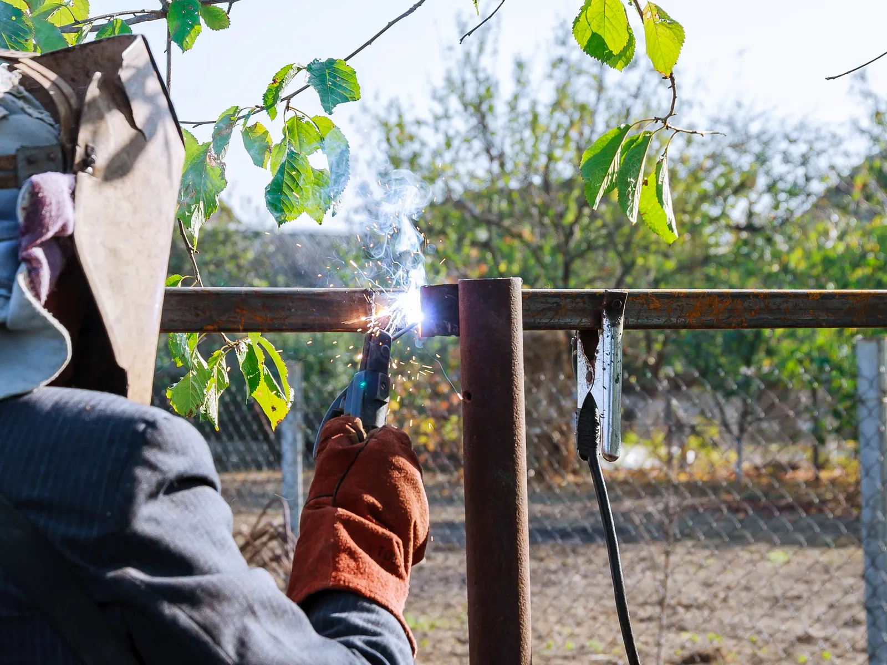

Home · Service Areas · Kenner
Mobile Welders in Kenner, LA
At Big Easy Mobile Welders, we fix and fabricate metal for Kenner homes and businesses, from sagging gates and loose railings to pipe fencing, bar grating and custom stainless pieces. A licensed, insured welder works out of a fully equipped mobile unit, so the metal stays on your property.

We come to the jobWhat Does Every Mobile Welding Visit in Kenner Include?
Each Kenner welding visit starts with a quote that costs nothing and commits you to nothing. From there, an experienced welder sets up our fully equipped unit on your property, grinds the joint clean, makes the weld and walks you through the result before packing up.
A No-Cost Quote
We look at the piece and quote the repair for free, with no hidden fees.
Trained, Insured Welders
Each repair is assigned to a highly trained welder who is licensed and insured.
Welding at the Curb
A fully equipped mobile unit parks at your home or business, so heavy steel is repaired where it stands.
Prep Before the Arc
Wire brushes and grinders take the joint down to clean metal before we weld.
Pipe Fencing to Bar Grating
We weld metal pipe fencing, steel bar grating, aluminum float decks and stainless steel fabrications, big and small.
Follow-Up Support
We walk you through the finished weld, offer easy payment options and stay reachable afterward.

Which Repairs Bring Kenner Owners to a Mobile Welder?
Kenner homeowners and businesses usually call about metal that has shifted, cracked or rusted. Driveway gates drop and scrape the concrete, porch railings work loose, pipe fencing breaks at a post and steel grating cracks at a weld. Bent trailer parts and one-off custom pieces bring calls too.
- Driveway Gate Scraping Concrete
- Snapped Gate Hinge
- Shaky Porch Railing
- Rust Eating a Railing Base
- Cracked Pipe Fence Post
- Broken Bar Grating Weld
- Bent Trailer Tongue
- Corroded Steel Window Frame
What Kinds of Welding Can You Get in Kenner?
In Kenner, you can book gate, fence, pipe, iron railing, arc or custom welding, and we also fix window frames, take on specialized jobs and fabricate metal, all part of our mobile welding services. Our own welders do the work on site, and a free estimate comes first on every job.

Pipe Welding
Pipe and pipeline repair on site, with stick and gas-shielded processes matched to the pipe.
View pipe welding →
Fence Welding
Fence repairs and custom fence fabrication, with the material and process chosen for your fence.
View fence welding →
Gate Welding
Gate repairs and custom gates in steel or aluminum, with materials and tools covered in your estimate.
View gate welding →
Iron Railing Welding
Custom indoor and outdoor railings for stairways, decks and balconies, built to fit your property.
View railing welding →
Arc Welding
Shielded and non-shielded arc welding for commercial and residential customers.
View arc welding →
Custom Welding
Custom ironwork, estimated before we start so we arrive with the right equipment for the job.
View custom welding →
When Should You Call a Welder About Metal in Kenner?
Kenner metal needs a welder as soon as a part that should stay still starts to move, or a joint shows cracks or swelling rust. Small failures at a hinge, post or bracket are often a quick repair, while waiting can let rust spread until a whole section has to be cut out and replaced.
A Gate That Has Dropped
A gate that scrapes the ground or will not latch may have a failed hinge weld or post.
Rust Lifting the Paint
Bubbling or peeling paint at a joint often hides rust. Pitted steel may need new metal before it can be welded.
A Crack You Can See
A visible line along a weld means the joint is under stress, and cracks tend to grow as the metal flexes.
What Should You Know About Welding on Kenner Homes?
Kenner's housing shapes its welding work. Most homes are detached houses, and nearly half were built in the 1960s and 1970s, so many fences, gates and railings carry decades of wear. The city also stretches from the Mississippi River to Lake Pontchartrain, in a humid climate that is hard on bare steel.

Census numbers explain most of the metalwork on Kenner lots.
- Detached Houses Lead.Of Kenner's 27,908 housing units, 62.2 percent are detached single-family homes, per the Census Bureau's 2020 to 2024 American Community Survey.
- A 1970s Building Boom.That survey also dates 34 percent of Kenner homes to the 1970s alone, and nearly half to the years 1960 through 1979.
- River to Lake.Williams Boulevard, described by the parish tourism office as the city's main street, runs from Rivertown on the Mississippi River to Lake Pontchartrain.
- Humid Weather.Kenner's humid climate can speed rust on uncoated steel, so a new weld should be cleaned and coated. Our guide on rust protection for welded metal walks through the steps.

Why Hire a Local Mobile Welding Team in Kenner?
With a local mobile welder, Kenner owners skip unbolting a gate or railing and trucking it across town, since the weld is made where the metal is installed. Our company is locally owned, has worked around New Orleans for many years and keeps supporting customers after the weld cools.
Owned Here
We are a locally owned business with a long record of welding around New Orleans and its neighbors.
A Shop on Wheels
Our mobile units hold the welding machine and prep tools, so repairs happen in place.
Highly Trained Welders
Every Kenner job goes to a licensed, insured welder whose experience runs past 20 years.
Straight Answers on Price
Estimates are free and come with no obligation, and pricing stays transparent with no hidden fees.
How Is a Mobile Welding Repair Handled at Your Property in Kenner?
A mobile welding repair in Kenner moves through four stages: a free estimate requested by phone or online, an approved quote with a weekday visit you choose, prep and welding at your property, and a closing review of the repair, plus follow-up support when you want it.
Tell Us What Broke
Phone (504) 370-2757, or describe the problem in our online form and, if you can, attach a photo.
Choose a Weekday Slot
Once the quote is approved, pick a time Monday through Friday between 8 AM and 3 PM.
Prep and Weld on Site
Our welder cleans the joint, makes the repair and checks the fit.
Review the Work
We show you the finished weld and stay on call for any follow-up.
 The rig comes to you
The rig comes to youHow Should Kenner Owners Plan a Welding Visit?
Before a welding visit in Kenner, think about three things: the metal involved, the path our mobile unit will take to reach it, and whether you need a repair or a new piece built. A photo or two and a short description let us price the job and pack the right equipment.
What It Is Made Of
Mild steel, stainless, aluminum, brass and cast iron each need different prep and filler. A clear photo usually tells us which you have.
Storm Damage or Slow Wear
Bent panels and snapped hinges after a storm are planned differently from slow rust. Our guide to storm damage welding fixes for fences, gates and railings covers the common repairs.
Room to Work
Tell us about parking, locked gates and pets, and clear away anything that can burn.
What Other Cities Are on the Kenner Mobile Welding Route?
Kenner is one of twelve cities on our mobile welding route, alongside New Orleans, Metairie, St. Rose, Gretna, LaPlace, Slidell, Mandeville, Covington, Madisonville, Hammond and Baton Rouge. Wherever you are on that list, the welders, the fully equipped mobile units and the free estimates stay the same.
- New Orleans
- Metairie
- Kenner
- Gretna
- St. Rose
- LaPlace
- Slidell
- Mandeville
- Covington
- Madisonville
- Hammond
- Baton Rouge
Not sure we cover your street?
Request a free estimate or call us, and we will confirm before we book the job.
Where Our Rigs Roll
Schematic, not to scale. New Orleans and the 11 nearby cities we serve.
About Kenner
Kenner is a Jefferson Parish city that runs from the Mississippi River north to Lake Pontchartrain.
Founded in 1855
The City of Kenner dates its founding to 1855, when a surveyor completed a map of the future town. Kennerville was the first town on the New Orleans to Jackson rail line.
Home of the Airport
Kenner was chosen in 1940 as the site of New Orleans International Airport, dedicated in 1946 and now named for Louis Armstrong.
Population and Land
The 2020 Census counted 66,448 people in Kenner, on about 14.9 square miles of land.
Things To Do
Kenner's free time tends to revolve around Rivertown by the river and Laketown on the lake.
Rivertown
This 16-block historic district on the Mississippi holds Heritage Park, the Rivertown Theaters and, per the parish tourism office, the region's only planetarium.
Laketown and Coconut Beach
Laketown covers 30 lakefront acres for picnics, biking, fishing and boat launching, and Coconut Beach adds 22 sand volleyball courts.
Pontchartrain Center
This lakeshore venue has more than 70,000 square feet for sports, shows and banquets.
Nearby Suburbs
Several cities in our service area are a short drive from Kenner, upriver and down.
Metairie
Metairie lies just east of Kenner and is Jefferson Parish's largest community, according to the parish tourism office.
St. Rose
St. Rose sits a short way upriver in St. Charles Parish, and the 2020 Census put its population at 7,504.
New Orleans
New Orleans lies farther east, and JP Transit's E1 and E2 buses run between Kenner and the city.
Interesting and Fun Facts
Kenner's story includes a historic prizefight, a farming past and a riverfront revival.
A Championship Fight
On May 10, 1870, Kenner hosted what the city calls the first heavyweight boxing championship fight. Statues of the two fighters stand at La Salle's Landing.
Green Gold Fields
From 1886, Italian and German families farmed Kenner's fields, which the city says dominated produce markets until the 1950s.
From Kennerville to Rivertown
In the 1980s the old Kennerville area was revived and marketed as Rivertown, which grew to six museums and three theaters in the 1990s.
Public Transportation
Jefferson Parish Transit runs Kenner's buses, its Lyft-based on-demand zone and the MITS paratransit service.
- E1 Veterans-Airport: runs from the airport along Veterans Boulevard toward the Canal Boulevard Terminal in New Orleans.
- E2 Airline Drive: leaves from the Kenner Terminal Parking Garage and runs the Airline Drive corridor to Tulane Avenue downtown.
- E9 Williams: covers Williams Boulevard from Jefferson Highway up to the Treasure Chest Casino and the Pontchartrain Center.
- E201 Kenner Loop: links the airport, Williams Boulevard at 33rd Street and the Ochsner Health Center in Kenner.
- Moving Kenner: curb-to-curb on-demand rides you book in the Lyft app or by phone, Monday through Friday from 6 a.m. to 7 p.m.
- MITS: origin-to-destination paratransit on the East Bank for riders who qualify.
Where Do You Start for a Free Welding Quote in Kenner?
A free welding quote in Kenner begins when you phone (504) 370-2757 or send us the details by web form. Say what broke or what you want made, mention the metal type if known and attach a photo, and you get back a clear, obligation-free figure with no hidden fees.
Loading the estimate form...
If it does not appear, call us at (504) 370-2757.

What Do Kenner Residents Want to Know About Welding?
Kenner residents ask who fixes wrought iron, whether it rusts, whether stainless joins mild steel, whether automatic gates can be fixed, which metal suits a driveway gate, what drives repair cost, whether cast aluminum welds and when Kenner was founded.
Who fixes wrought iron gates and railings in Kenner?
We repair wrought iron gates and railings across Kenner with a mobile unit that comes to the property. Broken hinges, cracked pickets and loose posts can usually be welded in place, and rusted sections can be cut out and replaced. We price every repair with a free, no-obligation estimate first.
Does wrought iron rust?
Wrought iron does rust, though true wrought iron often rusts more slowly than mild steel. Most gates sold as wrought iron today are mild steel, which rusts fast once paint chips. In humid Kenner air, an intact coating is the best protection.
Can you weld stainless steel to mild steel?
Stainless steel can be welded to mild steel, usually with a stainless filler such as 309 that is made for joining the two. The joint needs clean prep, and the mild steel side will still rust if it is left bare, so it should be primed and painted after welding.
Can a welder fix an automatic driveway gate?
A welder can fix the metal parts of an automatic driveway gate, such as a cracked frame, a broken operator bracket or a bent hinge. The motor, wiring and controls belong to a gate technician. A square, sound frame usually helps the opener run smoothly.
What metal is best for a driveway gate?
Steel is the usual choice for a strong, heavy driveway gate, while aluminum is lighter, easier on hinges and openers and does not rust. Stainless steel resists corrosion but usually costs more. The right pick depends on size, look and upkeep.
What affects the cost of a welding repair?
Welding repair cost usually depends on the metal, the size of the break, how much rust must be cut out, whether new material is needed and how hard the spot is to reach. Primer and paint add to it. A free estimate gives you the figure first.
Can you weld cast aluminum?
Cast aluminum is often weldable, usually by TIG, though it takes care. Castings can hold oil, dirt and tiny voids from the original pour that bubble up during welding, so the area has to be cleaned thoroughly. Some castings weld far better than others, which a welder can judge in person.
When was Kenner founded?
Kenner was founded in 1855, the year a surveyor finished the map of the future town, according to the City of Kenner. It began as Kennerville on the New Orleans to Jackson rail line, was incorporated in 1873 and was incorporated again in 1913.


Book Your Free Mobile Welding Estimate
Tell us what needs welding, and we will bring the rig to your door anywhere in the New Orleans area.